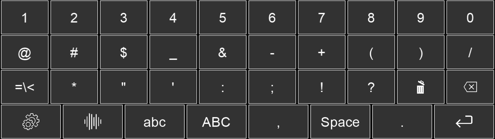

symbols_layout¶
This is the standard sub keyboard which contains numbers and special characters. The JSON file for this keyboard looks like this:
[
[
["BASIC_KEY","1"], ["BASIC_KEY","2"], ["BASIC_KEY","3"], ["BASIC_KEY","4"], ["BASIC_KEY","5"],
["BASIC_KEY","6"], ["BASIC_KEY","7"], ["BASIC_KEY","8"], ["BASIC_KEY","9"], ["BASIC_KEY","0"]
],
[
["BASIC_KEY","@"], ["BASIC_KEY","#"], ["BASIC_KEY","$"], ["BASIC_KEY","_"], ["BASIC_KEY","&"],
["BASIC_KEY","-"], ["BASIC_KEY","+"], ["BASIC_KEY","("], ["BASIC_KEY",")"], ["BASIC_KEY","/"]
],
[
["SWITCH_TO_ADDITIONAL_SYMBOLS_KEY","=\\<"], ["BASIC_KEY","*"], ["BASIC_KEY","\""], ["BASIC_KEY","'"],
["BASIC_KEY",":"], ["BASIC_KEY",";"], ["BASIC_KEY","!"], ["BASIC_KEY","?"],
["CLEAR_KEY","key_icons\\clear_default.png"], ["BACKSPACE_KEY","key_icons\\delete_space_default.png"]
],
[
["SWITCH_TO_MENU_KEY","key_icons\\settings_default.png"], ["TTS_KEY","key_icons\\speech_default.png"],
["SWITCH_TO_LOWER_KEY","abc"], ["SWITCH_TO_UPPER_KEY","ABC"],["BASIC_KEY",","], ["SPACE_BAR_KEY","Space"],
["BASIC_KEY","."], ["ENTER_KEY","key_icons\\enter_default.png"]
]
]
This results in the following keyboard:
{kind=link}